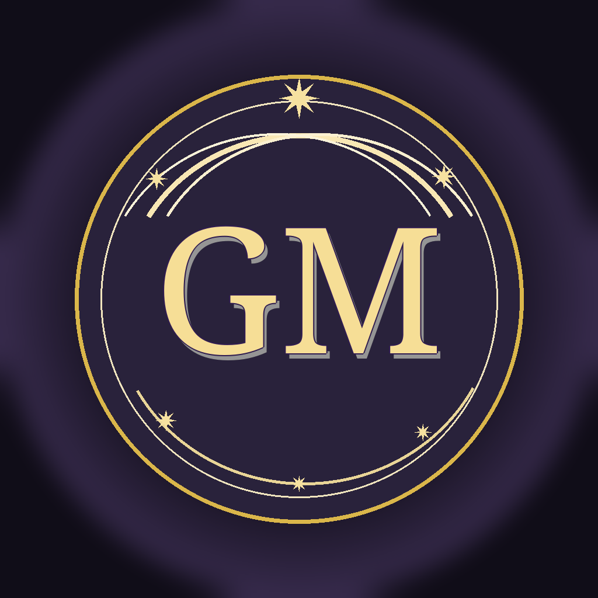

Bu rapor Ağustos boyunca uygulanacak günlük paylaşım omurgasını, yeniay/dolunay özel kampanyalarını, haftalık tema akışını ve ölçüm disiplinini belirler.
Her gün 12 burçluk günlük yorum carousel’i paylaşılır. Bu içerik hesabın “her gün bakılır” alışkanlığını kurar.
12 Ağustos Yeniay/Güneş Tutulması ve 28 Ağustos Dolunay/Ay Tutulması özel paket olarak işlenir.
Burç, tarot, numeroloji, rüya tabiri, spiritüel sembol ve mizah/gündem içerikleri dönüşümlü yürür.
Toplu takip, satın alma veya agresif davet yok. Büyüme; kaydedilen carousel, yorum isteyen interaktif formatlar, paylaşılabilir mizah ve çevreye doğal tanıtımla ilerler.
Hedef takipçi sayısından önce güven, süreklilik ve danışmanlık dönüşümüdür.
| Tarih | Sabit | Ek ana içerik | CTA |
|---|---|---|---|
| 1 Ağu Cmt | Carousel Günlük burç | Ayın enerjisi: “Ağustos’ta seni bekleyen ana tema” | İlk gördüğün kelime anketi |
| 2 Ağu Paz | Carousel Günlük burç | “Bu ay kapısı açılan yükselenler” | Yükselenini yaz |
| Tarih | Sabit | Ek ana içerik | CTA |
|---|---|---|---|
| 3 Ağu Pzt | Günlük burç carousel | Reel Haftanın enerjisi | Kaydet, hafta sonu tekrar bak |
| 4 Ağu Sal | Günlük burç carousel | Tarot: 4 kart seç | Kart numaranı yorumlara yaz |
| 5 Ağu Çar | Günlük burç carousel | Numeroloji: Ağustos 2026 yaşam yolu mesajı | Doğum tarihini yaz |
| 6 Ağu Per | Günlük burç carousel | Ay fazı Son dördün: “Bırakman gereken yük ne?” | Soru kutusu: neyi bırakıyorsun? |
| 7 Ağu Cum | Günlük burç carousel | Mizah “Terazi karar verirken...” | Arkadaşını etiketle |
| 8 Ağu Cmt | Günlük burç carousel | Spiritüel sembol: Ay | Bugün hangi sembol dikkatini çekti? |
| 9 Ağu Paz | Günlük burç carousel | Rüya tabiri: rüyada su / deniz | Rüyanı yaz |
Yeni başlangıç, niyet, yön değiştirme ve “hayatımda hangi kapı açılıyor?” temalarıyla kaydetme/yorum oranını yükseltmek. 12–16 Ağustos arasında danışman profili CTA’sı daha görünür kullanılır.
| Tarih | Sabit | Ek ana içerik | CTA |
|---|---|---|---|
| 10 Ağu Pzt | Günlük burç carousel | Yeniay ön hazırlık: “Yeni döngüye hazırlan” | Niyetini seç: aşk / para / huzur / kariyer |
| 11 Ağu Sal | Günlük burç carousel | “Kapısı açılacak yükselenler” | Yükselenini yorumlara yaz |
| 12 Ağu Çar | Günlük burç carousel | Ana paket Yeniay + Güneş Tutulması carousel | Kaydet + goldmoodastro.com yönlendirmesi |
| 13 Ağu Per | Günlük burç carousel | Yeniay sonrası reel: “Bu niyet sende çalışıyor olabilir” | Story: hangi niyeti seçtin? |
| 14 Ağu Cum | Günlük burç carousel | Kahve falı sembolü: yol / kapı / anahtar | Fincanında çıkan sembolü yaz |
| 15 Ağu Cmt | Günlük burç carousel | İletişim ve fırsat: “Sana gelen haber ne anlatıyor?” | Mesaj bekliyor musun? |
| 16 Ağu Paz | Günlük burç carousel | Dönüşüm Astrolog Fatma Güçlü tanıtımı | Profil linki / randevu CTA |
Yorum, paylaşım ve kaydetme davranışını artıracak interaktif formatlar. Sinastri, kart seç, mizah ve sembol içerikleri öne çıkar.
| Tarih | Sabit | Ek ana içerik | CTA |
|---|---|---|---|
| 17 Ağu Pzt | Günlük burç carousel | Haftanın yükselen mesajları | Kaydet, yükselenini oku |
| 18 Ağu Sal | Günlük burç carousel | Tarot: “Ruhunun bugün duyması gereken mesaj” | Kartını seç |
| 19 Ağu Çar | Günlük burç carousel | Spiritüel sembol: Nazar Boncuğu / enerji koruma | Bu sembolü birine gönder |
| 20 Ağu Per | Günlük burç carousel | Ay fazı İlk dördün: “Niyeti eyleme çevirme zamanı” | Bu hafta hangi adımı atacaksın? |
| 21 Ağu Cum | Günlük burç carousel | Mizah “Balık iyiyim dediğinde...” | Emojiyle tepki ver |
| 22 Ağu Cmt | Günlük burç carousel | Sinastri: “Aklındaki kişi seni nasıl görüyor?” | Burçlarınızı yazın |
| 23 Ağu Paz | Günlük burç carousel | Rüya tabiri: eski ev / eski kişi | Soru kutusu |
Tamamlanma, bırakma, farkındalık, döngü kapatma ve hafifleme temalarıyla güçlü kaydetme/paylaşma davranışı oluşturmak. 28–31 Ağustos arası danışmanlık CTA’sı daha net verilir.
| Tarih | Sabit | Ek ana içerik | CTA |
|---|---|---|---|
| 24 Ağu Pzt | Günlük burç carousel | Dolunay ön hazırlık: “Hangi konu görünür oluyor?” | Yükselenini yaz |
| 25 Ağu Sal | Günlük burç carousel | Spiritüel sembol: Sonsuzluk / tekrar eden döngü | Hangi döngüyü kapatıyorsun? |
| 26 Ağu Çar | Günlük burç carousel | “Rahat nefes alacak yükselenler” | Kaydet |
| 27 Ağu Per | Günlük burç carousel | Dolunay arifesi: “Bırakma listesi” | Bırakıyorum / tutuyorum |
| 28 Ağu Cum | Günlük burç carousel | Ana paket Dolunay + Ay Tutulması carousel/reel | Danışman yorumu CTA |
| 29 Ağu Cmt | Günlük burç carousel | Dolunay sonrası: “Yükü hafifleyen yükselenler” | Yükselenini paylaş |
| 30 Ağu Paz | Günlük burç carousel | Ay sonu değerlendirme: “Ağustos sana ne öğretti?” | İlk kelime / niyet kontrolü |
| 31 Ağu Pzt | Günlük burç carousel | Eylül’e hazırlık: “Yeni ayın kapısı” | Eylül niyetini yaz |
Bu plan “her şeyi aynı anda yayınla” değil; her gün sabit bir omurga ve bir ana vurgu demektir. Performansa göre ikinci haftadan itibaren reel/story yoğunluğu artırılabilir.
GOLDMOOD-SOSYAL-MEDYA-STRATEJISI.mdreports/GoldMoodAstro-Agustos-2026-Icerik-Plani.mdreports/GoldMoodAstro-Agustos-2026-Icerik-Plani-RAPOR.pdf